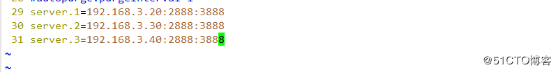

七 高可用
简介：
在典型的HA集群中，通常有两台不同的机器充当NN（namenode),在任何时间，只有一台机器处于active状态，另一 台机器则处于standby状态，active NN负责集群中所有客户端的操作，而standby NN主要用于备用，主要维持足够的状态，如果有必要，可以 提供快速的故障恢复
为了让standby NN状态和 active NN 保持同步，及元数据保持一致，他会都会和journalnodes 守护进程通信，当active NN 执行任何有关命名空间的修改，他都需要持久化到一半以上的journalnodes 上（通过edits log 持久化存储），而standby NN负责观察edits log 的变化，他能够从JNS 中读取edits 信息，并更新其内部的名称空间，一旦active NN 出现故障，standby NN 会将保证从JNS中读取了全部edits，然后切换成active 状态，standby NN读取全部的edits 可确保发生故障转移之前，是和active NN拥有完全同步的命名空间状态
为了提供快速的故障恢复，standby NN也需要保存集群中各个文件块的存储位置，为了实现这个，集群中的所有Datanode 将配置好的active NN和standby NN的位置，并向他们发送快文件所在的位置及心跳。
为了部署HA 集群，你需要准备以下事项：
（1）、NameNode machines：运行Active NN 和Standby NN 的机器需要相同的硬件配置；
（2）、JournalNode machines：也就是运行JN 的机器。JN 守护进程相对来说比较轻量，所以这些守护进程可以可其他守护线程（比如NN，YARN ResourceManager）运行在同一台机器上。在一个集群中，最少要运行3 个JN 守护进程，这将使得系统有一定的容错能力。当然，你也可以运行3 个以上的JN，但是为了增加系统的容错能力，你应该运行奇数个JN（3、5、7 等），当运行N 个JN，系统将最多容忍(N-1)/2 个JN 崩溃。在HA 集群中，Standby NN 也执行namespace 状态的checkpoints，所以不必要运行Secondary NN、CheckpointNode 和BackupNode；事实上，运行这些守护进程是错误的。
1 DHFS 高可用
1 关闭之前的服务
2 查看各节点配置
3 配置服务
[root@hadoop ~]# vim etc/hadoop/hdfs-site.xml
4 删除原有配置
[root@hadoop ~]# rm -rf etc/hadoop/host-exclude
5 清空原有配置，以防影响

6 配置安装服务zookeeper
zookeeper 至少为三台，总结点数为奇数个

7 启动服务
8 查看那个是leader
9 在leader 上启动服务并查看相关配置
10 配置集群相关配置
1 配置指定hdfs的namenode 为master(名称随意)指定zookeeper 集群主机地址(server2,server3,server4的IP地址)
vim etc/hadoop/core-site.xml
2 编辑hdfs-site.xml文件
vim etc/hadoop/hdfs-site.xml
A 指定hdfs的nameservices 为master
B 定义namenode节点（server1 server5 ）
C 指定namenode 元数据在journalNode上的存放位置
D指定journalnode在本地磁盘存放数据的位置
E 开启namenode 失败自动切换，及自动切换实现方式，隔离机制方式以及使用sshfence 隔离机制需要ssh免密以及隔离机制超时时间等参数
11 配置server5进行挂载
yum -y install rpcbind nfs-utils
12 启动日志服务器server2 server3 server4
13 格式化namenode
14 将生成的数据发送到另一个高可用节点
15 配置免密认证
16 启动zkfc服务
17 查看服务
18 验证高可用，关闭服务
2 高可用之 YARN vim etc/hadoop/mapred-site.xml 1 指定yarn的框架为mapreduce vim etc/hadoop/yarn-site.xml 2 配置可以在nodemanager上运行mapreduce程序3 激活RM高可用
4 指定RM的集群ID

5 定义RM节点
6激活RM 自动恢复
7 配置RM状态信息存储方式，有memstore和ZKstore
8 配置为zookeeper 存储时，指定ziikeeper集群的地址
9启动yarn 服务并查看
10 另一个节点需要手工启动服务
11 查看集群状态
12 测试
断开主节点查看情况
则切换到server5上
查看server5 状态
启动server1
查看server1状态
13 服务的关闭方式